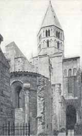

|
Il monastero di Cluny fu fondato nel 910 dal duca Guglielmo d'Auvergne, ma fu sotto la direzione di uomini come Oddone (morto nel 943) o Odilone di Mercoeur (morto nel 1043) che la comunità monastica visse il momento di maggior splendore. Si può dire con ragionevole certezza che il monachesimo nato con la riforma di Cluny dette al cristianesimo occidentale un'impronta fondamentale che è durata per secoli e dura ancora oggi. La Congregazione cluniacense rappresentò una delle più profonde riforme dell'Ordine benedettino, secondo l'aspirazione a un monachesimo integrale: sue caratteristiche furono il pronunciato ritualismo, la norma del silenzio e in genere un accentuato spiritualismo, gli ideali di libertà del sistema feudale laico ed episcopale, il centralismo operante attraverso l'organizzazione del priorato e il diritto di visita dell'abate maggiore nelle varie abbazie, la stretta unione con Roma che garantiva l'indipendenza dei cluniacensi dal sistema feudale civile ed ecclesiastico e soprattutto, nei primi tempi almeno, la perfetta pratica delle virtù monastiche. L'ideale che si aveva della santità all'epoca era l'ideale monastico: la rinuncia alla vita del mondo per salvare l'anima, l'astrazione dalle attività sociali ed anche da ogni altra virtù che non fosse la rinuncia, l'umiltà, la castità. è da qui che partì il rinnovamento della Chiesa, non dai vescovi, fossero essi semifeudatari, come lo erano in Francia, o fedeli alla tradizione carolingia come in Germania.
Per i monaci cluniacensi la vita di questo mondo era il vestibolo dell'eternità. Tutto doveva essere sacrificato a fini ultraterreni. La salvezza dell'anima era tutto e non si poteva raggiungere che attraverso la Chiesa, che doveva essere assolutamente pura da ingerenze temporali. Ovvio che queste concezioni si scontrassero con gli interessi imperiali e con quelli dei vescovi più collusi col potere dell'Impero. Non si trattava di aborrire l'alleanza ai fini del buongoverno tra Chiesa e Stato, ma di subordinare completamente l'uomo e la società alla Chiesa, vera, unica intermediaria tra lui e Dio in campo spirituale.
La diffusione della riforma di Cluny fu assai profonda e assai ampia, soprattutto in Francia, Germania, Italia centrale e meridionale, Spagna settentrionale e Inghilterra; pure in Grecia, presso Bisanzio, in Palestina, in Polonia e in Ungheria furono avvertibili gli influssi cluniacensi. Facilitarono la diffusione della Congregazione la necessità di riforma di molte comunità benedettine, gli statuti ben definiti e l'efficiente organizzazione internazionale, ma anche i mezzi coattivi e disciplinari usati a volte, soprattutto dopo l'XI secolo, contro monasteri non riformati.

Ovunque fu introdotta la riforma aumentò la pietà esteriore che consisteva in primo luogo nell'obbedienza al culto, nel rispettarne le feste, nel rimettersi in tutto e per tutto alla Chiesa, vista come "fidanzata di Cristo", sua rappresentante sulla Terra, fonte mistica di grazia e salute. Aumentò il numero dei cavalieri che entrarono nella vita religiosa, dei prìncipi che morirono in abito monacale. La fondazione di nuovi monasteri si moltiplicò in tutta Europa. La potenza del movimento lasciò tracce ancora visibili oggi: fu in quel periodo che si dette inizio alle costruzioni di moltissime chiese, prova anche dell'enorme aumento della ricchezza della Chiesa.
Nel periodo di maggiore splendore di Cluny si ebbero, secondo calcoli provvisori, 1629 case riformate e 1450 case annesse. L'organizzazione della Congregazione era fondata sull'autorità del prior abbas di Cluny (accanto al quale fin dal XII secolo erano 10 capi provinciali e, dal 1231, il Capitolo generale) e dei definitori; da Cluny dipendevano i cinque priorati più antichi (detti Quinque Filiae), da cui dipendeva direttamente a sua volta un certo numero di priorati, il gruppo delle abbazie incorporate, quelle poste sotto la sorveglianza della Congregazione e infine quelle affidate temporaneamente ai cluniacensi per essere riformate; il prior abbas aveva il diritto di visita di ciascuna abbazia dipendente e convalidava l'elezione di ciascun abate.
Grande fu l'influenza, soprattutto religiosa, della riforma di Cluny; svolse un ruolo di enorme importanza nell'ambito della lotta per le Investiture (1073-1122). Minore importanza ebbe l'influenza culturale, limitata all'architettura; molto notevole fu invece l'influsso sulla liturgia per la magnificenza dei riti, l'istituzione di particolari devozioni come la commemorazione dei defunti, l'intensificazione del culto della Santa Croce e della Vergine. Da Cluny uscirono i papi Urbano II e Pasquale II; pur senza avervi appartenuto, Gregorio VII ne adottò e ne propagò lo spirito.
|


 LA RIFORMA DI CLUNY -
LA RIFORMA DI CLUNY -